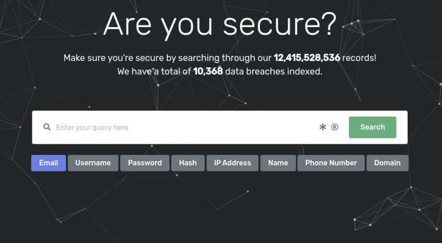
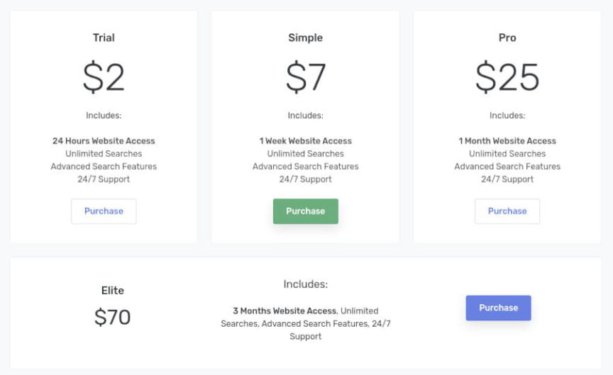
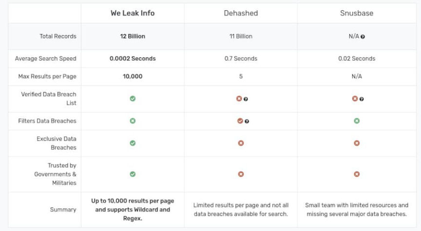
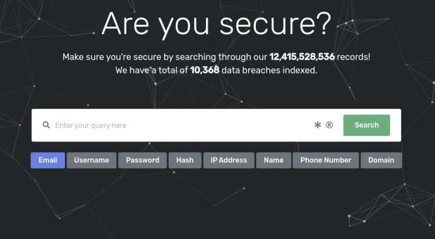
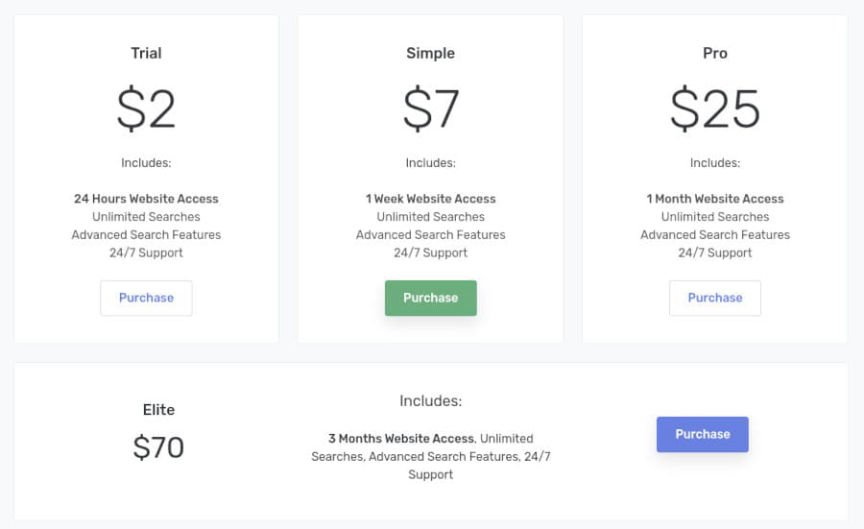
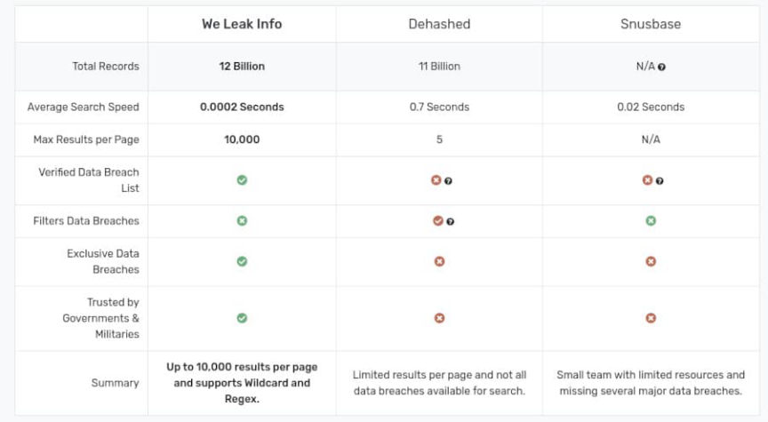

FBI Seized weleakinfo.to and Two Related Domains
The FBI and the U.S. Department of Justice announced the seizure of three domains as part of an international cybercrime investigation.
“Today, the FBI and the Department stopped two distressingly common threats: websites trafficking in stolen personal information and sites which attack and disrupt legitimate internet businesses,” said U.S. Attorney Graves. “Cyber crime often crosses national borders. Using strong working relationships with our international law enforcement partners, we will address crimes like these that threaten privacy, security, and commerce around the globe.”

Three domains are now in the custody of the Department of Justice: weleakinfo.to, ipstress.in, and ovh-booter.com.
“These seizures are prime examples of the ongoing actions the FBI and our international partners are undertaking to disrupt malicious cyber activity,” said Special Agent in Charge Jacobs. “Disrupting malicious DDoS operations and dismantling websites that facilitate the theft and sale of stolen personal information is a priority for the FBI.”

Weleakinfo.to hosted a database of seven billion indexed records, including names, email addresses, usernames, phone numbers, and passwords for online accounts. Customers could pay for a subscription that allowed them to search for records for the duration of the subscription.

In January 2020, the FBI announced the seizure of weleakinfo.[em]com[/em].
ipstress.in and ovh-booter.com, as indicated by their addresses, allowed paying customers to launch Distributed Denial of Service attacks with the site’s infrastructure.
The Netherlands National Police Corps and the Belgium Federal Police assisted in the investigation. The FBI’s international partners arrested one suspect, executed search warrants, and seized server infrastructure.

[em]WeLeakInfo.to and Related Domain Names Seized[/em] | archive.is, justice.gov
“Today, the FBI and the Department stopped two distressingly common threats: websites trafficking in stolen personal information and sites which attack and disrupt legitimate internet businesses,” said U.S. Attorney Graves. “Cyber crime often crosses national borders. Using strong working relationships with our international law enforcement partners, we will address crimes like these that threaten privacy, security, and commerce around the globe.”
Visitors of the websites are met with a seizure banner.
Three domains are now in the custody of the Department of Justice: weleakinfo.to, ipstress.in, and ovh-booter.com.
“These seizures are prime examples of the ongoing actions the FBI and our international partners are undertaking to disrupt malicious cyber activity,” said Special Agent in Charge Jacobs. “Disrupting malicious DDoS operations and dismantling websites that facilitate the theft and sale of stolen personal information is a priority for the FBI.”

The search feature on WeLeakInfo.to.
Weleakinfo.to hosted a database of seven billion indexed records, including names, email addresses, usernames, phone numbers, and passwords for online accounts. Customers could pay for a subscription that allowed them to search for records for the duration of the subscription.

The site offered several different subscriptions ranging from $2 to $70 per month.
In January 2020, the FBI announced the seizure of weleakinfo.[em]com[/em].
ipstress.in and ovh-booter.com, as indicated by their addresses, allowed paying customers to launch Distributed Denial of Service attacks with the site’s infrastructure.
The Netherlands National Police Corps and the Belgium Federal Police assisted in the investigation. The FBI’s international partners arrested one suspect, executed search warrants, and seized server infrastructure.

“Trusted by governments...”
[em]WeLeakInfo.to and Related Domain Names Seized[/em] | archive.is, justice.gov